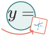
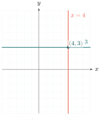

- សង់បន្ទាត់នៃសមីការ \(\displaystyle y = ax + b\)
- រកសមីការនៃបន្ទាត់ដែលកាត់តាមពីរចំណុច
- រកសមីការនៃបន្ទាត់ដែលស្រប ឬកែងនឹងបន្ទាត់មួយទៀត
- អនុវត្តសមីការនៃបន្ទាត់ ។

សួស្ដីប្អូនៗទាំងអស់គ្នា! សូមស្វាគមន៍មកកាន់មេរៀនទី ១០។ ថ្ងៃនេះលោកគ្រូនឹងនាំប្អូនៗទៅស្គាល់ពី «សមីការនៃបន្ទាត់»។ តើប្អូនៗធ្លាប់ឆ្ងល់ទេថា រាល់បន្ទាត់ត្រង់ដែលយើងគូសនៅលើក្រដាស តើគេអាចសរសេរវាជាទម្រង់គណិតវិទ្យាបានដោយរបៀបណា? តោះ! រៀបចំសៀវភៅ និងប៊ិច យើងទៅរៀនទាំងអស់គ្នាដោយរីករាយ!
1. ការសង់បន្ទាត់ (Graphing a Line)
1.1. ការសង់បន្ទាត់តាមតារាងតម្លៃលេខ
ឧបមាថាយើងមានសមីការមួយ \(\displaystyle y = 2x + 1\) ។ សមីការនេះបង្ហាញពីទំនាក់ទំនងរវាង \(\displaystyle x\) និង \(\displaystyle y\) ។ បើយើងសាកល្បងឱ្យតម្លៃលេខទៅ \(\displaystyle x\) តើ \(\displaystyle y\) នឹងប្រែប្រួលយ៉ាងដូចម្ដេច? ចម្លើយដែលយើងទទួលបាន គឺគូចំណុច \(\displaystyle (x, y)\) ។ ពេលយើងយកចំណុចទាំងនោះទៅដៅលើប្លង់កូអរដោនេ ហើយភ្ជាប់វាបញ្ចូលគ្នា យើងនឹងទទួលបានបន្ទាត់ត្រង់មួយដ៏ស្រស់ស្អាត!
ឧទាហរណ៍ទី 1៖ ចូរសង់ក្រាបនៃសមីការ \(\displaystyle y = 2x + 1\) ។
គិត៖ លោកគ្រូគិតថា ដើម្បីគូសបន្ទាត់នេះបាន យើងត្រូវដឹងសិនថាវាឆ្លងកាត់ចំណុចណាខ្លះ។ វិធីដែលងាយបំផុតគឺយើងត្រូវបង្កើតតារាងតម្លៃលេខ។
ជ្រើសវិធី៖ យើងនឹងឱ្យតម្លៃ \(\displaystyle x\) មួយចំនួនតូចៗ (ឧទាហរណ៍ពី \(\displaystyle -3\) ដល់ \(\displaystyle 3\)) រួចយកទៅជំនួសក្នុងសមីការដើម្បីរក \(\displaystyle y\) ។ បន្ទាប់មកយើងដៅចំណុចទាំងនោះរួចគូសបន្ទាត់ភ្ជាប់។
ធ្វើ៖ តោះសាកល្បង៖ បើ \(\displaystyle x = 0\) នោះ \(\displaystyle y = 2(0) + 1 = 1 \Rightarrow (0, 1)\) ។ បើ \(\displaystyle x = 1\) នោះ \(\displaystyle y = 2(1) + 1 = 3 \Rightarrow (1, 3)\) ។
| \(\displaystyle x\) | -3 | -2 | -1 | 0 | 1 | 2 | 3 |
| \(\displaystyle y\) | -5 | -3 | -1 | 1 | 3 | 5 | 7 |
ពេលនេះប្អូនៗសង្កេតមើល៖ រាល់ពេលដែល \(\displaystyle x\) កើនឡើង 1 ឯកតា (\(\displaystyle 1 - 0 = 1\)) តើ \(\displaystyle y\) កើនឡើងប៉ុន្មាន? គឺ \(\displaystyle 3 - 1 = 2\) ឯកតា!
ផលធៀបនេះលោកគ្រូហៅថា មេគុណប្រាប់ទិស៖
មេគុណប្រាប់ទិស \(\displaystyle = \frac{\text{បម្រែបម្រួលនៃ }\rule[-0.5em]{0pt}{1.55em} y}{\text{បម្រែបម្រួលនៃ }\rule[-0.5em]{0pt}{1.55em} x} = \frac{2}{1} = 2\) ។

ពិនិត្យ៖ មើលក្រាបរបស់យើង! វាមានរាងងើបឡើងលើពីឆ្វេងទៅស្ដាំ។ នេះដោយសារតែមេគុណប្រាប់ទិសយើងធំជាងសូន្យ (\(\displaystyle 2 > 0\)) នោះឯង។ ការគណនារបស់យើងពិតជាត្រឹមត្រូវមែន!
អស្ចារ្យណាស់! ឥឡូវប្អូនៗចេះសង់បន្ទាត់ដែលមានរាងងើបឡើងហើយ។ ចុះបើសមីការមានមេគុណមុខ \(\displaystyle x\) ជាសញ្ញាដកវិញ តើបន្ទាត់មានរាងបែបណា? តោះសាកល្បងមួយទៀតមើល!
ឧទាហរណ៍ទី 2៖ ចូរសង់ក្រាបនៃសមីការ \(\displaystyle y = -3x + 1\) ។
គិត៖ សមីការនេះមានលេខ \(\displaystyle -3\) នៅមុខ \(\displaystyle x\)។ លោកគ្រូជឿថាពេល \(\displaystyle x\) កាន់តែធំ \(\displaystyle y\) នឹងកាន់តែតូច។ តើវាពិតមែនទេ?
ជ្រើសវិធី៖ ដូចមុនដែរ យើងសង់តារាងតម្លៃលេខដោយឱ្យ \(\displaystyle x\) ជាលេខងាយៗ \(\displaystyle \{-2, -1, 0, 1, 2\}\) រួចដៅចំណុចលើប្លង់កូអរដោនេ។
ធ្វើ៖
| \(\displaystyle x\) | -2 | -1 | 0 | 1 | 2 |
| \(\displaystyle y\) | 7 | 4 | 1 | -2 | -5 |
បម្រែបម្រួលនៃ \(\displaystyle x\) ស្មើនឹង 1 ។
បម្រែបម្រួលនៃ \(\displaystyle y\) ស្មើនឹង \(\displaystyle -3\) ។
មានន័យថាបើ \(\displaystyle x\) កើន 1 ឯកតា នោះ \(\displaystyle y\) នឹងថយចុះ 3 ឯកតា!
មេគុណប្រាប់ទិស \(\displaystyle = \frac{\text{បម្រែបម្រួល }\rule[-0.5em]{0pt}{1.55em} y}{\text{បម្រែបម្រួល }\rule[-0.5em]{0pt}{1.55em} x} = \frac{-3}{1} = -3\) ។

ពិនិត្យ៖ ក្រាបរអិលចុះក្រោមពីឆ្វេងទៅស្ដាំមែន! នេះបញ្ជាក់ថាមេគុណប្រាប់ទិសអវិជ្ជមាន (-3) ធ្វើឱ្យបន្ទាត់ចុះ។ យើងគូសបានត្រឹមត្រូវណាស់!
ជាទូទៅ ៖ លោកគ្រូសូមសង្ខេបជារូបមន្តឱ្យប្អូនៗងាយចាំ៖
- បន្ទាត់មួយមានសមីការទូទៅ \(\displaystyle y = ax + b\) ដែល \(\displaystyle a\) ជាមេគុណប្រាប់ទិស ។
បើយើងដឹងចំណុចពីរ \(\displaystyle A(x_1 \ , \ y_1)\) និង \(\displaystyle B(x_2 \ , \ y_2)\) មេគុណប្រាប់ទិសកំណត់ដោយ៖
\(\displaystyle a = \frac{y_2 - y_1}{x_2 - x_1}\)
ឧទាហរណ៍ទី 3៖ រកមេគុណប្រាប់ទិសនៃបន្ទាត់កាត់តាមពីរចំណុច \(\displaystyle A(-2 \ , \ 1)\) និង \(\displaystyle B(3 \ , \ 4)\) ។
គិត៖ យើងស្គាល់កូអរដោនេចំណុចពីរ។ យើងមិនចាំបាច់គូសក្រាបដើម្បីរកមេគុណប្រាប់ទិសទេ យើងអាចគណនាតាមរូបមន្តបានយ៉ាងលឿន!
ជ្រើសវិធី៖ លោកគ្រូនឹងយកលទ្ធផលខាងលើមកប្រើ គឺរូបមន្ត \(\displaystyle a = \frac{y_2 - y_1}{x_2 - x_1}\) ។
ធ្វើ៖
តាង \(\displaystyle A\) ជាចំណុចទី១ នាំឱ្យ \(\displaystyle x_1 = -2, y_1 = 1\)
និង \(\displaystyle B\) ជាចំណុចទី២ នាំឱ្យ \(\displaystyle x_2 = 3, y_2 = 4\) ។
ជំនួសចូលរូបមន្ត៖
\(\displaystyle a = \frac{4 - 1}{3 - (-2)} = \frac{3}{3 + 2} = \frac{3}{5}\)
ដូចនេះ មេគុណប្រាប់ទិសនៃបន្ទាត់ \(\displaystyle AB\) គឺ \(\displaystyle \frac{3}{5}\) ។

ពិនិត្យ៖ លទ្ធផល \(\displaystyle \frac{3}{5}\) គឺវិជ្ជមាន។ មើលលើរូប ចំណុច \(\displaystyle B\) ខ្ពស់ជាងចំណុច \(\displaystyle A\) ដូច្នេះបន្ទាត់មានរាងឡើង ដែលស័ក្តិសមនឹងមេគុណវិជ្ជមានពិតមែន!
តោះប្អូនៗ! ដល់ពេលយកចំណេះដឹងនេះទៅសាកល្បងខ្លួនឯងហើយ។ ព្យាយាមធ្វើលំហាត់ប្រតិបត្តិខាងក្រោម ដើម្បីឱ្យកាន់តែស្ទាត់ជំនាញណា៎! លោកគ្រូជឿថាប្អូនៗធ្វើបាន!
ប្រតិបត្តិ៖
1. ចូរសង់បន្ទាត់ដែលមានសមីការ \(\displaystyle y = -\frac{x}{2}\) ។
2. ចូរសង់បន្ទាត់ដែលកាត់តាមចំណុច \(\displaystyle A(0 \ , \ 1)\) និងមានមេគុណប្រាប់ទិសស្មើ \(\displaystyle -\frac{1}{3}\) ។
3. ចូរគណនាមេគុណប្រាប់ទិសនៃបន្ទាត់កាត់តាមពីរចំណុច \(\displaystyle A(-2 \ , \ 0)\) និង \(\displaystyle B(-1 \ , \ 4)\) ។
1.2. ការសង់បន្ទាត់កាត់តាមពីរចំណុច (Intercepts Method)
លោកគ្រូសូមប្រាប់អាថ៌កំបាំងមួយ! បន្ទាត់ត្រង់មួយត្រូវការតែចំណុច២ប៉ុណ្ណោះដើម្បីគូសវាបាន។ ចំណុចដែលងាយស្រួលរកបំផុត គឺចំណុចដែលវាទៅកាត់អ័ក្ស \(\displaystyle x\) និងអ័ក្ស \(\displaystyle y\) ។
- ពេលវាកាត់អ័ក្ស \(\displaystyle y\) មានន័យថា \(\displaystyle x = 0\) ។
- ពេលវាកាត់អ័ក្ស \(\displaystyle x\) មានន័យថា \(\displaystyle y = 0\) ។
តោះយើងសាកល្បងប្រើវិធីដ៏រហ័សនេះមើល!
ឧទាហរណ៍ទី 1៖ សង់បន្ទាត់ដែលមានសមីការ \(\displaystyle y = 2x + 4\) ។
គិត៖ ជាជាងការសង់តារាងវែងអន្លាយ យើងគ្រាន់តែរកចំណុចដែលបន្ទាត់នេះកាត់អ័ក្សទាំងពីរទៅបានហើយ។
ជ្រើសវិធី៖ ទី១ លោកគ្រូឱ្យ \(\displaystyle x=0\) ដើម្បីរក \(\displaystyle y\) ។ ទី២ លោកគ្រូឱ្យ \(\displaystyle y=0\) ដើម្បីរក \(\displaystyle x\) ។
ធ្វើ៖
រកចំណុចកាត់អ័ក្សឈរ \(\displaystyle y'y\)៖
ឱ្យ \(\displaystyle x = 0\) លោកគ្រូបាន \(\displaystyle y = 2(0) + 4 = 4\)
យើងបានចំណុច \(\displaystyle (0 \ , \ 4)\) ។
រកចំណុចកាត់អ័ក្សដេក \(\displaystyle x'x\)៖
ឱ្យ \(\displaystyle y = 0\) លោកគ្រូបាន \(\displaystyle 0 = 2x + 4\)
\(\displaystyle 2x = -4 \Rightarrow x = -2\)
យើងបានចំណុច \(\displaystyle (-2 \ , \ 0)\) ។
យកចំណុចទាំងពីរនេះទៅដៅលើប្លង់ រួចគូសបន្ទាត់ភ្ជាប់វា!

ពិនិត្យ៖ បន្ទាត់រត់កាត់ \(\displaystyle (-2,0)\) និង \(\displaystyle (0,4)\) មែន ហើយមានមេគុណប្រាប់ទិសវិជ្ជមានស្របតាមសមីការ \(\displaystyle y = 2x + 4\)។ លឿននិងត្រឹមត្រូវល្អណាស់!
ជាទូទៅ ៖ ប្អូនៗគួរចំណាំលក្ខណៈពិសេសមួយចំនួន៖
- បន្ទាត់មានសមីការទម្រង់ \(\displaystyle y = ax\) (អត់មានបូកលេខពីក្រោយ) គឺកាត់តាមគល់កូអរដោនេ \(\displaystyle O(0,0)\) ជានិច្ច ។
- បើប្អូនៗឃើញសមីការមានតែ \(\displaystyle x\) ដូចជា \(\displaystyle x = h\) នោះជាបន្ទាត់ឈរ ។
- បើប្អូនៗឃើញសមីការមានតែ \(\displaystyle y\) ដូចជា \(\displaystyle y = k\) នោះជាបន្ទាត់ដេក ។

ប្រតិបត្តិ៖ ចូរសង់បន្ទាត់ \(\displaystyle y = \frac{-x + 4}{2}\) , \(\displaystyle y = 2\) និង \(\displaystyle x = 4\) ក្នុងប្លង់តែមួយ រួចគណនាផ្ទៃក្រឡានៃត្រីកោណដែលខណ្ឌដោយបន្ទាត់ទាំងបីនេះ ។
2. សមីការនៃបន្ទាត់ (Equation of a line)
2.1. សមីការនៃបន្ទាត់កាត់តាមពីរចំណុច
តាំងពីដើមមេរៀនមក យើងចេះគូសបន្ទាត់ពេលគេប្រាប់សមីការ។ ចុះបើគេឱ្យតែចំណុចពីរ ហើយឱ្យយើងរកសមីការបន្ទាត់វិញ តើយើងត្រូវធ្វើដូចម្តេច? កុំបារម្ភ! លោកគ្រូនឹងប្រាប់ពីវិធីដ៏អស្ចារ្យមួយដោយផ្អែកលើមេគុណប្រាប់ទិសដែលយើងទើបរៀនអម្បាញ់មិញ។
ឧបមាថាយើងមានចំណុច \(\displaystyle A\) និង \(\displaystyle B\) ថេរ។ បើយើងយកចំណុចថ្មីមួយឈ្មោះថា \(\displaystyle M(x, y)\) ឱ្យវារត់នៅលើបន្ទាត់ \(\displaystyle AB\) នោះ ទំនោរពី \(\displaystyle A\) ទៅ \(\displaystyle M\) និងទំនោរពី \(\displaystyle A\) ទៅ \(\displaystyle B\) ត្រូវតែស្មើគ្នាជានិច្ច! នេះមានន័យថា មេគុណប្រាប់ទិស \(\displaystyle AM\) = មេគុណប្រាប់ទិស \(\displaystyle AB\) ។ ការផ្ទឹមគ្នានេះ នឹងបង្កើតបានសមីការបន្ទាត់!
ឧទាហរណ៍៖ សង់ពីរចំណុច \(\displaystyle A(2 \ , \ 2)\) និង \(\displaystyle B(4 \ , \ 3)\) រួចកំណត់រកសមីការនៃបន្ទាត់នោះ ។
គិត៖ លោកគ្រូត្រូវប្រើទ្រឹស្តីដែលថា ចំណុចនៅលើបន្ទាត់តែមួយមានមេគុណប្រាប់ទិសដូចគ្នា។
ជ្រើសវិធី៖ តាងចំណុច \(\displaystyle M(x,y)\) មួយនៅលើបន្ទាត់ \(\displaystyle AB\) ។ យើងរកមេគុណប្រាប់ទិស \(\displaystyle AB\) និងមេគុណប្រាប់ទិស \(\displaystyle AM\) (ឬ \(\displaystyle BM\)) រួចឱ្យវាស្មើគ្នា ។
ធ្វើ៖
មេគុណប្រាប់ទិសនៃ \(\displaystyle AB : \frac{y_B - y_A}{x_B - x_A} = \frac{3 - 2}{4 - 2} = \frac{1}{2}\)
មេគុណប្រាប់ទិសនៃបន្ទាត់ដែលកាត់តាម \(\displaystyle M(x,y)\) និង \(\displaystyle B(4,3)\) គឺ : \(\displaystyle \frac{y - 3}{x - 4}\)
ដោយសារវាជាបន្ទាត់តែមួយ យើងផ្ទឹមវាបញ្ចូលគ្នា៖
\(\displaystyle \frac{y - 3}{x - 4} = \frac{1}{2}\)
គុណខ្វែង៖ \(\displaystyle 2(y - 3) = 1(x - 4)\)
\(\displaystyle 2y - 6 = x - 4\)
\(\displaystyle 2y = x + 2 \Rightarrow y = \frac{x}{2} + 1\)

ពិនិត្យ៖ លោកគ្រូសាកល្បងយកចំណុច \(\displaystyle A(2,2)\) ទៅជំនួសក្នុងសមីការថ្មី \(\displaystyle y = \frac{x}{2} + 1\) នោះបាន \(\displaystyle 2 = \frac{2}{2} + 1 = 1 + 1 = 2\) ពិតប្រាកដមែន ។ ការដោះស្រាយរបស់យើងពិតជាគ្មានកំហុសទេ!
ប្រតិបត្តិ៖ ចូររកសមីការបន្ទាត់កាត់តាមពីរចំណុច \(\displaystyle (-2 \ , \ 7)\) និង \(\displaystyle (2 \ , \ -1)\) ។
2.2. លក្ខខណ្ឌនៃបន្ទាត់ស្រប
មកដល់ចំណុចចុងក្រោយហើយប្អូនៗ! តើប្អូនៗធ្លាប់ឃើញផ្លូវរថភ្លើងទេ? ដែកថ្នាំងទាំងពីរខ្សែរត់ស្របគ្នា មិនដែលជួបគ្នាឡើយ។ ចំពោះបន្ទាត់ក៏ដូចគ្នាដែរ! តើបន្ទាត់ស្របគ្នាមានលក្ខណៈពិសេសយ៉ាងណា?
បើបន្ទាត់ពីរស្របគ្នា វាត្រូវតែមានទំនោរដូចគ្នាពិតប្រាកដ។ នៅក្នុងពិភពគណិតវិទ្យា ទំនោរត្រូវបានបញ្ជាក់តាមរយៈ «មេគុណប្រាប់ទិស»។ ដូច្នេះបើយើងមានបន្ទាត់ពីរស្របគ្នា វាត្រូវតែមានមេគុណប្រាប់ទិសស្មើគ្នាជានិច្ច!
ជាទូទៅ ៖ បើបន្ទាត់ \(\displaystyle d_1\) មានសមីការ \(\displaystyle y = ax + b\) និងបន្ទាត់ \(\displaystyle d_2\) មានសមីការ \(\displaystyle y = a'x + b'\) ។
បន្ទាត់ \(\displaystyle d_1 \parallel d_2\) លុះត្រាតែ \(\displaystyle a = a'\) ។ (មេគុណប្រាប់ទិសស្មើគ្នា)
លំហាត់គំរូទី 3៖ ចូររកសមីការបន្ទាត់ដែលកាត់តាម \(\displaystyle A(2 \ , \ 5)\) ហើយស្របនឹងបន្ទាត់ \(\displaystyle d : y = 3x + 4\) រួចសង់បន្ទាត់ទាំងពីរនេះ ។
គិត៖ យើងត្រូវរកសមីការបន្ទាត់ថ្មីដែលឆ្លងកាត់ \(\displaystyle A(2,5)\) ហើយស្របជាមួយ \(\displaystyle d\) ។ ដោយសារវាស្រប វាត្រូវតែខ្ចីមេគុណប្រាប់ទិសពីបន្ទាត់ \(\displaystyle d\) ។
ជ្រើសវិធី៖ មេគុណប្រាប់ទិសបន្ទាត់ \(\displaystyle d\) គឺ \(\displaystyle 3\) ។ ដូច្នេះបន្ទាត់ថ្មីរបស់យើងក៏មានមេគុណប្រាប់ទិស \(\displaystyle a = 3\) ដែរ។ យើងយក \(\displaystyle a=3\) និងចំណុច \(\displaystyle A(2,5)\) ទៅបង្កើតសមីការ។
ធ្វើ៖
តាង \(\displaystyle M(x,y)\) ជាចំណុចនៃបន្ទាត់ថ្មី។
មេគុណប្រាប់ទិស \(\displaystyle AM\) ត្រូវតែស្មើ \(\displaystyle 3\) ដែរ៖
\(\displaystyle \frac{y - 5}{x - 2} = 3\)
\(\displaystyle y - 5 = 3(x - 2)\)
\(\displaystyle y - 5 = 3x - 6\)
\(\displaystyle y = 3x - 1\)
ការសង់បន្ទាត់ទាំងពីរ៖
បន្ទាត់ \(\displaystyle d : y = 3x + 4\) កាត់តាម \(\displaystyle (0,4)\) និង \(\displaystyle (-1,1)\) ។
បន្ទាត់ថ្មី \(\displaystyle y = 3x - 1\) កាត់តាម \(\displaystyle (0,-1)\) និង \(\displaystyle A(2,5)\) ។

ពិនិត្យ៖ សមីការ \(\displaystyle y=3x-1\) ពិតជាមានមេគុណប្រាប់ទិស \(\displaystyle 3\) ដែលស្របនឹងបន្ទាត់ដើមមែន។ ការគូសវាស់នៅលើក្រាបក៏បង្ហាញថាបន្ទាត់ទាំងពីរស្របគ្នាស្រឡះ!
មេរៀនទី ១០ ត្រូវបានបញ្ចប់ហើយ! ងាយៗទេមែនទេប្អូនៗ? ការរៀនគណិតវិទ្យាគឺដូចជាការលេងល្បែងផ្គុំរូបអញ្ចឹង បើយើងយល់ពីក្បួនវានោះអ្វីៗនឹងងាយស្រួល។ កុំភ្លេចធ្វើលំហាត់ខាងក្រោមណា៎! លោកគ្រូសូមជូនពរប្អូនៗទទួលបានជោគជ័យ!
ប្រតិបត្តិ៖ ចូររកសមីការនៃបន្ទាត់ដែលកាត់តាមចំណុចមួយ ហើយស្របនឹងបន្ទាត់មួយទៀត ៖
ក. កាត់តាមចំណុច \(\displaystyle (0 \ , \ 0)\) ហើយស្របនឹងបន្ទាត់ \(\displaystyle y = 3x - 1\)
ខ. កាត់តាមចំណុច \(\displaystyle (6 \ , \ 3)\) ហើយស្របនឹងបន្ទាត់ \(\displaystyle x - 3y = 9\) ។
© ២០២៦ លោកគ្រូ សាន សុខលី · «គណិតវិទ្យាថ្នាក់ទី៩ បែបទំនើប» · រក្សាសិទ្ធិគ្រប់យ៉ាង។ សៀវភៅនេះកំពុងសរសេរ ខ្លឹមសារអាចនឹងកែប្រែ។